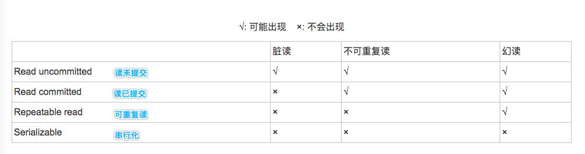

必备知识点（一）
数据库
mysql
1. Innodb的索引实现为什么是B+树，B和B+区别
(1) 区别
① B+树，n个关键字就会有n棵子树；B树，n个关键字有n+1棵树
② B+树，记录都在叶子节点上，其他节点都是索引；B树所有节点都有记录
③ B+树可以从最后叶节点出发顺序查找
(2) B+树好处
① 单一节点存储更多元素，减少I/O操作
② 所有查询都到叶子节点，查询稳定
③ B+树所有有序节点形成有序链，方便范围查询
** PS：B+树索引又分为：聚集索引、辅助索引（非聚集索引）**
聚集索引：每个叶子节点都有一整行数据
辅助索引：叶子节点中有每行数据索引
redis
1. 分布式锁
(1) 满足条件
① 在分布式系统环境下，一个方法在同一时间只能被一个机器的一个线程执行；
② 高可用的获取锁与释放锁；
③ 高性能的获取锁与释放锁；
④ 具备可重入特性；
⑤ 具备锁失效机制，防止死锁；
⑥ 具备非阻塞锁特性，即没有获取到锁将直接返回获取锁失败。
(2) CAP理论
一致性、可用性、分区容错性
任何一个分布式系统都无法同时满足，最多只能同时满足两项。”所以，很多系统在设计之初就要对这三者做出取舍。在互联网领域的绝大多数的场景中，都需要牺牲强一致性来换取系统的高可用性，系统往往只需要保证“最终一致性”，只要这个最终时间是在用户可以接受的范围内即可。
(3) 三种方式
① 基于数据库实现分布式锁
a. 创建表:
DROP TABLE IF EXISTS method_lock;
CREATE TABLE method_lock (
id int(11) unsigned NOT NULL AUTO_INCREMENT COMMENT '主键',
method_name varchar(64) NOT NULL COMMENT '锁定的方法名',
desc varchar(255) NOT NULL COMMENT '备注信息',
update_time timestamp NOT NULL DEFAULT CURRENT_TIMESTAMP ON UPDATE CURRENT_TIMESTAMP,
PRIMARY KEY (id),
UNIQUE KEY uidx_method_name (method_name) USING BTREE
) ENGINE=InnoDB AUTO_INCREMENT=3 DEFAULT CHARSET=utf8 COMMENT='锁定中的方法';
b. 想要执行某个方法，就使用这个方法名向表中插入数据：
NSERT INTO method_lock (method_name, desc) VALUES ('methodName', '测试的methodName');
因为我们对method_name做了唯一性约束，这里 如果有多个请求同时提交到数据库的话，数据库会保证只有一个操作可以成功，那么我们就可以认为操作成功的那个线程获得了该方法的锁，可以执行方法体内容。
c. 成功插入则获取锁，执行完成后删除对应的行数据释放锁：
delete from method_lock where method_name ='methodName';
PS:需要结局问题
1、因为是基于数据库实现的，数据库的可用性和性能将直接影响分布式锁的可用性及性能，所以，数据库需要双机部署、数据同步、主备切换；
2、不具备可重入的特性，因为同一个线程在释放锁之前，行数据一直存在，无法再次成功插入数据，所以，需要在表中新增一列，用于记录当前获取到锁的机器和线程信息，在再次获取锁的时候，先查询表中机器和线程信息是否和当前机器和线程相同，若相同则直接获取锁；
3、没有锁失效机制，因为有可能出现成功插入数据后，服务器宕机了，对应的数据没有被删除，当服务恢复后一直获取不到锁，所以，需要在表中新增一列，用于记录失效时间，并且需要有定时任务清除这些失效的数据；
4、不具备阻塞锁特性，获取不到锁直接返回失败，所以需要优化获取逻辑，循环多次去获取。
5、在实施的过程中会遇到各种不同的问题，为了解决这些问题，实现方式将会越来越复杂；依赖数据库需要一定的资源开销，性能问题需要考虑。
②基于缓存（Redis等）实现分布式锁
原因：Redis有很高的性能；Redis命令对此支持较好，实现起来比较方便
命令：
SETNX SETNX key val：当且仅当key不存在时，set一个key为val的字符串，返回1；若key存在，则什么都不做，返回0。
expire expire key timeout：为key设置一个超时时间，单位为second，超过这个时间锁会自动释放，避免死锁。
delete delete key：删除key
原理：
(1) 获取锁的时候，使用setnx加锁，并使用expire命令为锁添加一个超时时间，超过该时间则自动释放锁，锁的value值为一个随机生成的UUID，通过此在释放锁的时候进行判断。
(2) 获取锁的时候还设置一个获取的超时时间，若超过这个时间则放弃获取锁。
(3) 释放锁的时候，通过UUID判断是不是该锁，若是该锁，则执行delete进行锁释放。
③ 基于Zookeeper实现分布式锁
ZooKeeper是一个为分布式应用提供一致性服务的开源组件，它内部是一个分层的文件系统目录树
步骤：
(1) 创建一个目录mylock；
(2) 线程A想获取锁就在mylock目录下创建临时顺序节点；
(3) 获取mylock目录下所有的子节点，然后获取比自己小的兄弟节点，如果不存在，则说明当前线程顺序号最小，获得锁；
(4) 线程B获取所有节点，判断自己不是最小节点，设置监听比自己次小的节点；
(5) 线程A处理完，删除自己的节点，线程B监听到变更事件，判断自己是不是最小的节点，如果是则获得锁。
2. redis的事务跟数据库的事务一样吗
http://www.pianshen.com/article/1554287056/
3. Redis多个Client同时修改redis服务器中同一个key怎么办？（redis并发竞争问题？）
Redis的并发竞争问题，主要是发生在并发写竞争。
方法：分布式锁+时间戳；消息队列
(1) 分布式锁+时间戳
如果对key操作不需要按顺序执行，则直接使用分布式锁就可以。谁抢到谁操作。
如果对key操作需要按顺序执行，则在写入系统时，要加一个时间戳
(2) 消息队列
在并发量过大的情况下,可以通过消息中间件进行处理,把并行读写进行串行化。
把Redis.set操作放在队列中使其串行化,必须的一个一个执行
4. Redis扩容机制(渐进式单线程扩容)
其他
1. 悲观锁 乐观锁
悲观锁（写操作多的情况）
总是假设最坏的情况，每次去拿数据的时候都认为别人会修改，所以每次在拿数据的时候都会上锁，这样别人想拿这个数据就会阻塞直到它拿到锁（共享资源每次只给一个线程使用，其它线程阻塞，用完后再把资源转让给其它线程）
乐观锁（读操作多的情况）
总是假设最好的情况，每次去拿数据的时候都认为别人不会修改，所以不会上锁，但是在更新的时候会判断一下在此期间别人有没有去更新这个数据，可以使用版本号机制和CAS算法实现。乐观锁适用于多读的应用类型，这样可以提高吞吐量，像数据库提供的类似于write_condition机制，其实都是提供的乐观锁。
版本号机制：一般是在数据表中加上一个数据版本号version字段，表示数据被修改的次数，当数据被修改时，version值会加一。
CAS：compare and swap（比较与交换），是一种有名的无锁算法。无锁编程，即不使用锁的情况下实现多线程之间的变量同步，也就是在没有线程被阻塞的情况下实现变量的同步，所以也叫非阻塞同步。
步骤：需要读写的内存值 V；进行比较的值 A；拟写入的新值 B
当且仅当 V 的值等于 A时，CAS通过原子方式用新值B来更新V的值，否则不会执行任何操作（比较和替换是一个原子操作）。一般情况下是一个自旋操作，即不断的重试。
2.原子类实现原理
3. 数据库的隔离级别有哪些
读未提交（Read Uncommitted）：可以读到未提交数据，查询未上锁
读提交（Read Committed）：只能读到已经提交了的内容
可重复读（Repeated Read）
串行化（Serializable）
